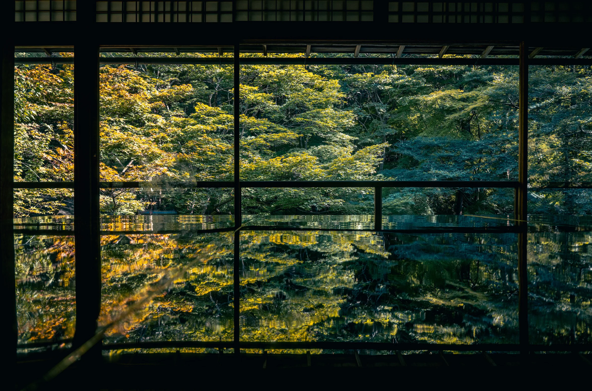

Online gallery / 2023-2026
William's Photo Gallery
An archive built around mountains, temple corridors, city density, and the moments between destinations.
- Collection entries
- 06
- Primary cameras
- Nikon Z9 / Canon R5
- Current edit
- Summer Palace




Selected series
Explore the collections.
Move through five main chapters, then continue into smaller studies, iPhone frames, and future edits in More Photos.

Photographer
William
A personal archive for travel photographs, field notes, and experiments in building a calmer image-first website.
Read the note